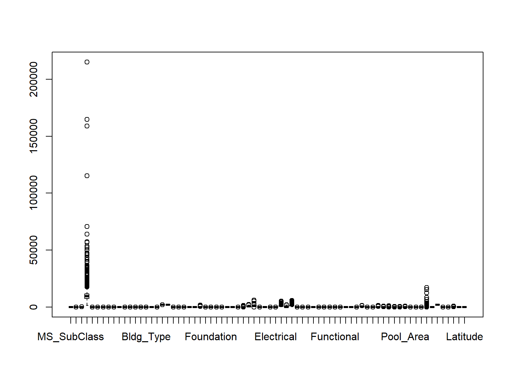

# Helper packages
library(dplyr) # for data wrangling
library(ggplot2) # for awesome plotting
library(modeldata)
library(foreach) # for parallel processing with for loops
# Modeling packages
# library(tidymodels)
library(xgboost)
library(gbm)Ensembles Lab 2: Boosting
Introduction
This lab continues on the previous one showing how to apply boosting. The same dataset as before will be used
Ames Housing dataset
Packge AmesHousing contains the data jointly with some instructions to create the required dataset.
We will use, however data from the modeldata package where some preprocessing of the data has already been performed (see: https://www.tmwr.org/ames)
The dataset has 74 variables so a descriptive analysis is not provided.
dim(ames)[1] 2930 74boxplot(ames)We proceed as in the previous lab and divide the reponse variable by 1000 facilitate reviewing the results .
require(dplyr)
ames <- ames %>% mutate(Sale_Price = Sale_Price/1000)
boxplot(ames)
Spliting the data into test/train
The data are split in separate test / training sets and do it in such a way that samplig is balanced for the response variable, Sale_Price.
# Stratified sampling with the rsample package
set.seed(123)
split <- rsample::initial_split(ames, prop = 0.7,
strata = "Sale_Price")
ames_train <- training(split)
ames_test <- testing(split)Parameter optimization
Tree number
This is a critical parameter as far as adding new trees increases risk of overfitting.
Before optimization is run, data is shaped into an object of class xgb.DMatrix, which is required to run XGBoost through this package.
ames_train_num <- model.matrix(Sale_Price ~ . , data = ames_train)[,-1]
ames_test_num <- model.matrix(Sale_Price ~ . , data = ames_test)[,-1]
train_labels <- ames_train$Sale_Price
test_labels <- ames_test$Sale_Price
ames_train_matrix <- xgb.DMatrix(
data = ames_train_num,
label = train_labels
)
ames_test_matrix <- xgb.DMatrix(
data = ames_test_num,
label = test_labels
)boostResult_cv <- xgb.cv(
data = ames_train_matrix,
params = list(eta = 0.3, max_depth = 6, subsample = 1, objective = "reg:squarederror"),
nrounds = 500,
nfold = 5,
metrics = "rmse",
verbose = 0
)
boostResult_cv <- boostResult_cv$evaluation_log
print(boostResult_cv) iter train_rmse_mean train_rmse_std test_rmse_mean test_rmse_std
<num> <num> <num> <num> <num>
1: 1 1.412915e+02 0.9570592195 141.81926 3.756892
2: 2 1.019455e+02 0.7941089688 103.61188 3.395008
3: 3 7.430242e+01 0.7320607454 77.11700 3.556748
4: 4 5.479365e+01 0.6093311366 59.41119 3.735165
5: 5 4.118576e+01 0.5362387078 48.04453 4.272442
---
496: 496 7.383272e-03 0.0006022381 29.16183 4.817437
497: 497 7.293321e-03 0.0005722715 29.16184 4.817432
498: 498 7.164931e-03 0.0005468412 29.16184 4.817431
499: 499 7.053888e-03 0.0005474267 29.16184 4.817429
500: 500 6.977090e-03 0.0005256163 29.16187 4.817472We aim at at the lowest number of trees that has associated a small cross-validation error.
ggplot(data = boostResult_cv) +
geom_line(aes(x = iter, y = train_rmse_mean, color = "train rmse")) +
geom_line(aes(x = iter, y = test_rmse_mean, color = "cv rmse")) +
geom_point(
data = slice_min(boostResult_cv, order_by = test_rmse_mean, n = 1),
aes(x = iter, y = test_rmse_mean),
color = "firebrick"
) +
labs(
title = "Evolution of cv-error vs number of trees",
x = "number of trees",
y = "cv-error (rmse)",
color = ""
) +
theme_bw() +
theme(legend.position = "bottom")paste("Optimal number of rounds (nrounds):", slice_min(boostResult_cv, order_by = test_rmse_mean, n = 1)$iter)[1] "Optimal number of rounds (nrounds): 77"Learning rate
Alongside the number of trees, the learning rate (eta) is the most crucial hyperparameter in Gradient Boosting. It controls how quickly the model learns and thus influences the risk of overfitting.
These two hyperparameters are interdependent: a lower learning rate requires more trees to achieve good results but reduces the risk of overfitting.
# Rango de valores para la tasa de aprendizaje (eta)
eta_range <- c(0.001, 0.01, 0.1, 0.3)
df_results_cv <- data.frame()
for (i in seq_along(eta_range)) {
set.seed(123)
# Validación cruzada con el eta actual
results_cv <- xgb.cv(
data = ames_train_matrix, # ✅ Usamos el xgb.DMatrix correcto
params = list(
eta = eta_range[i],
max_depth = 6,
subsample = 1,
objective = "reg:squarederror"
),
nrounds = 1000,
nfold = 5,
metrics = "rmse",
verbose = 0
)
# Extraer la evaluación de RMSE y registrar resultados
results_cv <- results_cv$evaluation_log
results_cv <- results_cv %>%
select(iter, test_rmse_mean) %>%
mutate(eta = as.character(eta_range[i])) # Guardamos el eta usado
df_results_cv <- df_results_cv %>% bind_rows(results_cv)
}ggplot(data = df_results_cv) +
geom_line(aes(x = iter, y = test_rmse_mean, color = eta)) +
labs(
title = "Evolución del error en validación cruzada vs tasa de aprendizaje (eta)",
x = "Número de iteraciones",
y = "Error RMSE en validación cruzada",
color = "Eta"
) +
theme_bw() +
theme(legend.position = "bottom")Optimized predictor
In order to obtain improved predictors one can perform a a grid search for the best parameter combination can be performed.
# Convertir variables categóricas a dummy variables usando model.matrix()
ames_train_num <- model.matrix(Sale_Price ~ . , data = ames_train)[,-1]
ames_test_num <- model.matrix(Sale_Price ~ . , data = ames_test)[,-1]
# Extraer etiquetas de Sale_Price
train_labels <- ames_train$Sale_Price
test_labels <- ames_test$Sale_Price
# Convertir a xgb.DMatrix
ames_train_matrix <- xgb.DMatrix(
data = ames_train_num,
label = train_labels
)
ames_test_matrix <- xgb.DMatrix(
data = ames_test_num,
label = test_labels
)
# Range of parameter values to test
eta_values <- c(0.01, 0.05, 0.1, 0.3)
nrounds_values <- c(500, 1000, 2000)
best_rmse <- Inf
best_params <- list()cv_results_df <- data.frame()
set.seed(123)
for (eta in eta_values) {
for (nrounds in nrounds_values) {
cv_results <- xgb.cv(
data = ames_train_matrix,
params = list(
eta = eta,
max_depth = 6,
subsample = 0.8,
colsample_bytree = 0.8,
objective = "reg:squarederror"
),
nrounds = nrounds,
nfold = 5,
metrics = "rmse",
verbose = 0,
early_stopping_rounds = 10
)
if (is.null(cv_results)) next
results_row <- data.frame(
eta = eta,
nrounds = nrounds,
min_rmse = min(cv_results$evaluation_log$test_rmse_mean),
best_nrounds = cv_results$evaluation_log$iter[which.min(cv_results$evaluation_log$test_rmse_mean)]
)
cv_results_df <- bind_rows(cv_results_df, results_row)
if (results_row$min_rmse < best_rmse) {
best_rmse <- results_row$min_rmse
best_params <- list(
eta = results_row$eta,
nrounds = results_row$best_nrounds
)
}
}
}cat("\n, Best hyperparameters values found:\n")
, Best hyperparameters values found:cat("Eta:", best_params$eta, "\n")Eta: 0.01 cat("Nrounds:", best_params$nrounds, "\n")Nrounds: 1000 cat("RMSE mínimo:", round(best_rmse, 4), "\n")RMSE mínimo: 24.4476